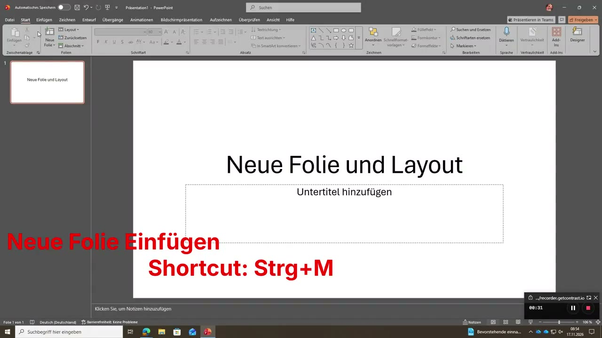
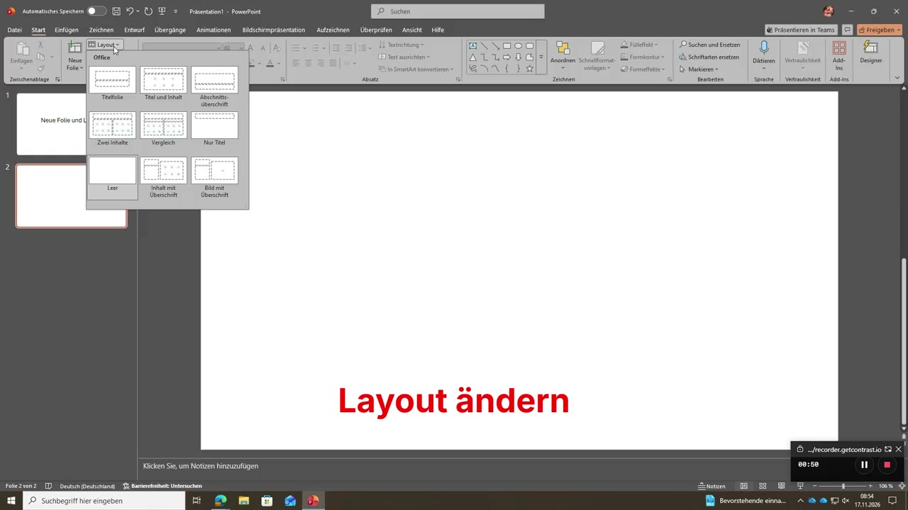

Neue Folie und Layout
aus dem WIK-Wiki, dem Nachschlagewerk der Klasse 10M
Erklärvideo, 35 Sekunden, ohne Ton | |
| Bereich | PowerPoint |
|---|---|
| Tastenkürzel | Strg + M |
| Autor | AJ |
| Fassung | v1 |
1 Anleitung
1. Folie hinzufügen
Klicke mit deinem Mauszeiger auf Folie hinzufügen. Dann kannst du auswählen, was für eine Folie du willst. Der Shortcut dafür ist Strg + M.


2. Layout wechseln
Klicke mit dem Mauszeiger auf Layout. Jetzt kannst du auswählen, welches Layout deine Folie haben soll.


2 Typische Fehler und Tipps
- Du machst einen Rechtsklick, aber du musst einen Linksklick machen
- Du drückst auf Folie löschen
- Du machst nicht das von dir gewünschte Layout
Kategorien: PowerPoint